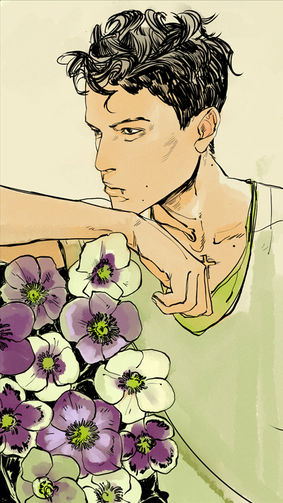

Рафаэль Сантьяго

У меня нет души. Но я дал тебе обещание на пороге у моей матери, и она была священа для меня. Я был ребенком тогда. Но не теперь. Я не могу. Я не буду. Я в долгу у него за много лет назад.
Рафаэль Сантьяго был вампиром, бывшим лидером местного клана вампиров Нью-Йорка и создателем Саймона Льюиса.
Характер и привычки
Рафаэль был хитрым, скорее даже тщеславным и высокомерным, но снисходительным. Он, в основном, наслаждался имеющейся у него властью и страхом, что он внушал остальным, и часто ущемлял всех, кто не был вампиром. Несмотря на это, он был человеком слова, обладающий чувством чести, благодарности и уважения по отношению к другим людям и их действиям. Он отказался убить Магнуса из-за того, что был должен магу, и в конце концов заплатил собственной жизнью; хотя, до того как ему было приказано убить Магнуса, он был готов встать на сторону Себастьяна, указывая на то, что его нежелание не было из-за добродушия, а по причине кровного долга. Он так же казался склонным к зависти, так как ненавидел Саймона за его способность ходить под солнцем.
Будучи мексиканским иммигрантом, в основном он говорил на испанском—например, когда обманывал примитивных. Его произношение было нечетким, завися от того, с кем он разговаривал, но он всегда был способен поддерживать формальный, почти архаический, ритм.
Внешность
Застрявший с внешностью себя пятнадцатилетнего, Рафаэль выглядел молодо и часто описывался с лицом ангела, хотя иногда его мудрость показывала прожитые им годы. У него были черные кудрявые волосы, очень тонкие брови и медовая кожа. Вампир имел легкое телосложение и был примерно на 15 сантиметров ниже Джейса. У Рафаэля так же был маленький шрам на груди, где раньше висело распятие его матери, которое прожгло ему кожу.